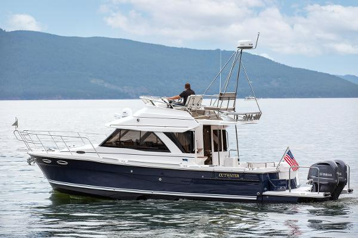

B-Atlas Boat Guide · CUTW-32
Cutwater C-32 CB Command Bridge
2018–2026
The Cutwater C-32 CB is a compact cruising model from Fluid Motion’s Cutwater line, combining enclosed accommodations with a performance-oriented hull and unusually dense standard equipment. This record uses Cutwater’s factory model designation rather than legacy B-Atlas labels such as “Pilothouse” or generic size-only names.

- Length
- 37.67 ft
- Beam
- 10 ft
- Draft
- 2.75 ft
- Hull behaviour
- Semi-Displacement
- Fuel
- Gasoline
- Propulsion
- Outboard
- Engine configuration
- Twin Yamaha F300 outboards
- Boat family
- Cruiser
- Construction
- Fiberglass
Best for
- Couples seeking a fast, compact cruiser with extensive standard equipment
- Owners who value modern systems, maneuverability and enclosed accommodations
- Inland and coastal cruising where the model’s dimensions fit
Trade-offs
- High equipment density increases maintenance complexity
- Performance-oriented hulls and later outboard packages are less traditional than displacement trawlers
- Trailerability on larger models depends on permit, tow-vehicle and actual loaded-weight constraints
Known concerns
- No model-specific concern has been promoted to B-Atlas’s evidence threshold. This does not mean the model has no age-, condition- or hull-specific risks.
Inspection focus
- Confirm exact factory designation and model year because Cutwater naming changed materially across generations
- Inspect propulsion, cooling or outboard rigging, fuel, steering and thruster systems
- Inspect windows, hatches, roof and deck penetrations for leakage
- Test electrical, charging, inverter and installed comfort systems under load
Continue researching
Related boat models
Cutwater C-30 CB Command Bridge
35.67 ft · Semi-Displacement
Cutwater C-24 C Coupe
31.17 ft · Planing
Cutwater C-30 S Sedan
35.67 ft · Semi-Displacement
Cutwater C-28 Cruiser
32.33 ft · Semi-Displacement
Nimbus 365 Coupé Sidewalk Coupé Cruiser
37.92 ft · Semi-Displacement
Beneteau Antares 11 Coupé
36.58 ft · Planing
About this record
B-Atlas preserves uncertainty: missing information remains unknown rather than being treated as a negative. Specifications and guidance describe the model record; individual boats can differ by year, equipment, refit and condition.